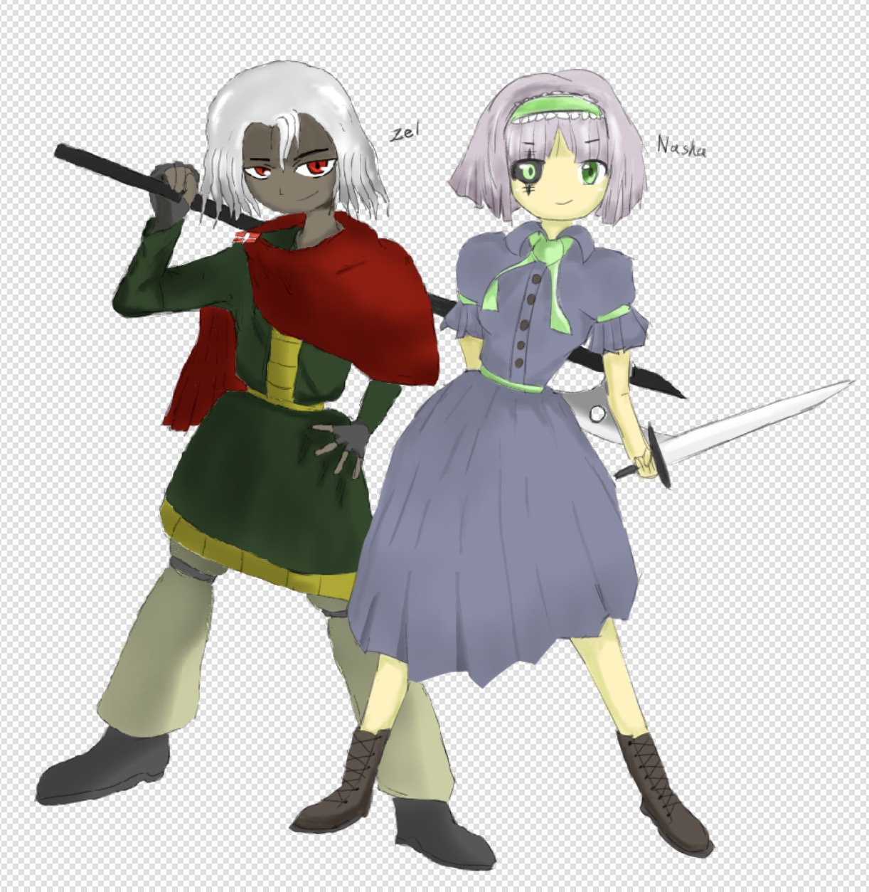
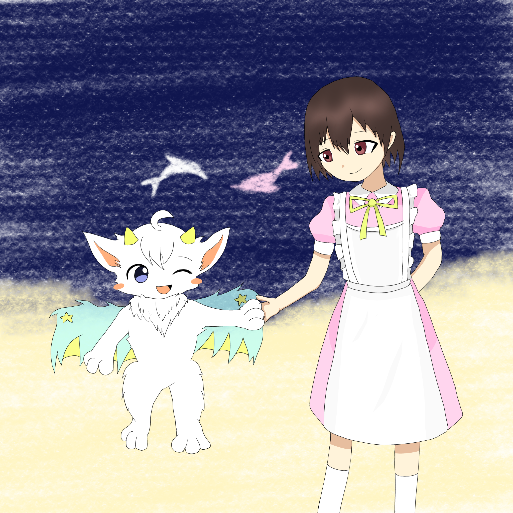

2026年9月26日
また一つ自分のことを理解できたかもしれない。
たぶん自分はADVゲームが特段に好きなのかもしれない。
今までハマったゲーム、つまり最後まで途切れずに一気に無我夢中で進めたゲームに
ADVまたは似たようなジャンルのゲームが多い気がする！
例えば、デトロイト、ダンガンロンパ、おさわり探偵、あとはシルフェイド学園、などなど。
フリーゲームだとシルフェイド見聞録かな。AyaのホームページもたぶんADVだよね。
マルチエンド系とかシミュレーション系のゲームもかなり好き。
Undertaleは自分の人生の特異点だったと思う。
これがなかったら自分はマルチエンド系のゲームにハマるのが数年遅れたかもしれない(SNSも始めてないと思われる)
最近だと、まじかるプリンセスが面白かったな。大学の自習をサボってでもプレイした。
Hoi4とかステラリスも好きだけど、時間泥棒だから自主規制した(数年単位で封印中)
フリーゲームだと偽りの神話とか。奈落シリーズもマルチエンドだったな。公衆電話も好き。
逆に一本道系のゲームは積んでることが多い(すみませんすぐに全部クリアします)
思えば、上記のようなゲームに触れた原点はおさわり探偵だったな...
幼稚園の頃に母のDSを借りて夢中になってやってた、全然謎解きできてなかったけどね
でも面白かったんだよね、成長してゲームのいろはがわかるようになってから改めてクリアした。
ちなみに一番好きなセリフは爺やの「幽霊は実在すると理性で理解しているが、本能が拒否する。」
こういう系のゲームで、謎解きとかは得意じゃないんだけど、じっくり考えるのが好き。
あとは、まるで同じ世界を体験してるかのように感じるのがいいね、没入感が他ジャンルに比べて強いのかもしれない。
ということで、次に作るゲームはADVがいいかな～...なんて思ったりしたんだけど、
果たして自分に上記のような作品を作ることができるのだろうか...いいやできるッ！
作らなければ0だが、作れば1以上の結果は得ることができるのだ！
...という壁打ちなのでした。
こういう内なる思いとか悩みって、今の時代ならAIに投げて壁打ちしても良いんだろうけど、
自分の経験上、役に立ったことがあんまりないんだよな...
あくまで壁打ちだから、回答以上の力を引き出すことができないのが弱点だね。
所詮は自我など持たぬ演算マシーン、道具だということを忘れてはならぬのだ。
さて、気持ちの整理終わり！これにて閉園でございます。お気を付けてお帰りください。
2026年9月21日
ちょっとこんなものを作ってみました。キャラ比較
入力データを元にキャラクター同士を比較することができます。
2026年9月20日
夜の勉強タイムでございます(昼サボった分の取り返し笑)
雨の夜は趣があってよいですね、いつもと違う神秘的な世界に迷い込んでしまったかのよう。
ラジオをつけ、部屋の電気を白にして少し下げると、なんかムーディーな感じに。
作業用のBGMとしてDark ambientを流すとさらに良き。
Dark ambientだと、snowfallやI hate this pleceがお気に入り
あとはブレードランナーのinterlinkedとか。
ちょっとジャンルは違うけど、Memory rebootもなかなかの神曲です。
実は自分でもAmibient musicを作成しようと試みているんです。
その先駆けがSlaughterだったり。
そんな暗いBGMばっかり聴いていて根暗にならないのかと思われそうですが、ご心配なく。
私は調子に乗りやすい性格ゆえ、少し落ち込んでるくらいのときがベストな状態なのです。
ですから、冷静になって落ち着きたいときにAmbientなどのダークミュージックを聞くことがあります。
おっと、喋りすぎてはいけない。集中するんだった...
最後に余談ですが、雨の夜に散歩(こっそり)するとバックルームの世界に迷い込んだみたいで面白いですよ！
危ないからあんまり真似しないでね(なんでおすすめしたんだ...)
2026年9月16日
最近雨多すぎだろ...大学が始まる前に落ち着いてくれるといいんだけどな
次のコンテストに向けていろいろ案を考えてみてるけど、なかなか思いつかず...
来年は厳しいか...？去年のこの時期にはゲームの半分は作り終えてたからな...
でも少しずつ地盤は整いつつあるぞ、famicon音源もかじってみたし、
SynthesizerVで歌を作ることも頑張ればできるって分かったし、積み重ねていけばなんとかなりそう
2026年9月02日
ウディコンに参加してみた感想を書きました！
大したことは書いていませんが、暇つぶしにどうぞ！
2026年8月30日
縫界史がその他部門で22位にランクインしました！みなさん投票ありがとうございます！！
さて、ウディコンもこれで一区切りついたということで、制作の裏話を少しだけしてみようと思います。
まずは、リファイン計画についてです。
縫界史には顔グラをリファインする計画がありました。既に表情差分は出来上がっていて、
あとは差し替えるだけで動いたのですが、いざ動かしてみると、可愛くなりすぎたので保留にしてしまいました。
それに、マップチップ及びキャラチップが16x16のため、あまり解像度の高いグラフィックが使えなかったのは弱点でした。
次回作ではチップのサイズをもう少しだけ大きくし、画面サイズを広げてみようと思ってます。
ちなみに第19回ウディコンにエントリーするかは未定です（そもそも作品が何もできてない笑）
でも今の気持ち的には、もう一度出てみたいです。
次はもっと面白い作品をお届けできるよう、頑張ります！本当にお疲れ様でした...！

2026年8月29日
今日は結果発表だ、やっぱり緊張するなぁ...
まさか自分たちの作品がウディコンのサイトに載るなんて数年前まで夢にも
思ってなかったし、なんというか、不思議な感じがします
2026年8月25日
ウディコンお疲れ様でした。そして、みなさん応援ありがとうございました。
いただいたコメントは全て読まさていただきました。次回作を作るときの参考にさせていただきます。
投票結果が出るまで、まるで数年前の大学受験のような、妙な緊張感が走っていてちょっと気持ちが
落ち着いてません...とはいえ、結果がどうであれ、いろんな方に遊んでもらっただけでも私は十分
満足できました！ありがとうございました。
2026年8月25日
先日、虹幻こんぷれっくすを遊びました！
創作をテーマにした物語にとても共感し、終始ゲームに熱中してました！
このゲームに出会えて本当に良かった...
↓ 拙いですが、ファンアートです

2026年8月17日
こんにちは。先日、縫界史のオリジナルサウンドトラックを作成しました。提供してくださった
楽曲の公開に快諾してくださったMasuka5353さんとDampf_Lazyさんには感謝してもしきれません。
また、Masuka5353さんがアレンジサウンドトラックを作成してくださいました。どの楽曲も素敵で、
Masukaさんに「どの曲が最推し？」と聞かれた際は、一番を決めることができませんでした(笑)
ぜひサントラを聴いていってもらえると嬉しいです！
2026年7月26日
お久しぶりです。実はウディコンにエントリーさせてもらいました。
作品は【54】縫界史です。いくつかの音楽やグラフィック素材はDampf_Lazyさん
Masuka5353さんが担当してくれました。ありがとうございました。
大学の試験期間と重なってデバックのための時間が十分にとれておらず、
不具合の修正が重なってしまいました...すみません。
ver2.2以降の更新で、遊びやすさに関する改善を行いました。
既にプレイしてくださった方はもちろん、まだの方もぜひ遊んでみてください。
ご意見ご感想、いつでもお待ちしております。
2026年4月22日
ようやく新学期のドタバタもおさまってきたところです...
windowsとipadでリアルタイム同期しながらノート取れたらいいなぁ。
おすすめの方法があったら何方か教えていただきたいです。
2026年3月25日
ホテルの空間とかって迷宮みたいでいいですよね。
何処までも続いてそうで、子供の頃は怖かったのと同時に
ワクワクしてました。
2026年3月24日
気づけばもう3月が終わってしまう...早いなあ。
最近はlucids blockというゲームにハマっています。
ここまでリミナルスペースを再現したゲームはたぶん初...
だまされたと思ってやってみて！
2026年3月20日
音楽プレーヤーを追加しました。今まで私が作ってきた曲の一部を公開しています。
よければ聞いて行ってください。
それらの曲は今製作中のRPGで流れる予定です。楽しみにしていてください！
2026年3月20日
ホームページを公開してみました。そういえばあの掲示板ってちゃんと使えるのかな...
ここまで大変だった...慣れてなかったから勉強になりました！
2026年3月20日
初めてホームページを作成しました！これからもっと充実させていこうと思います！